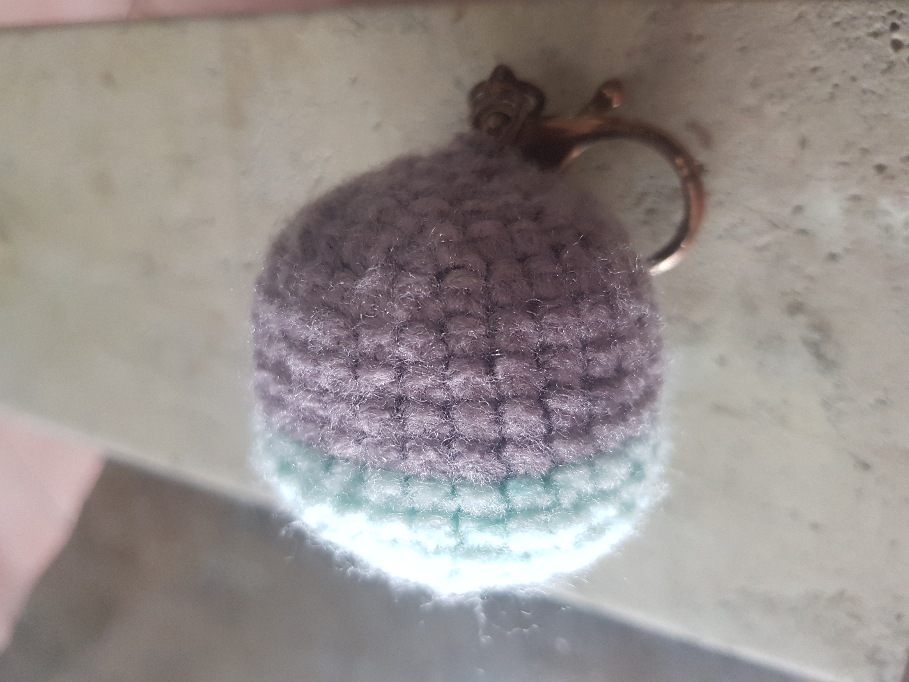
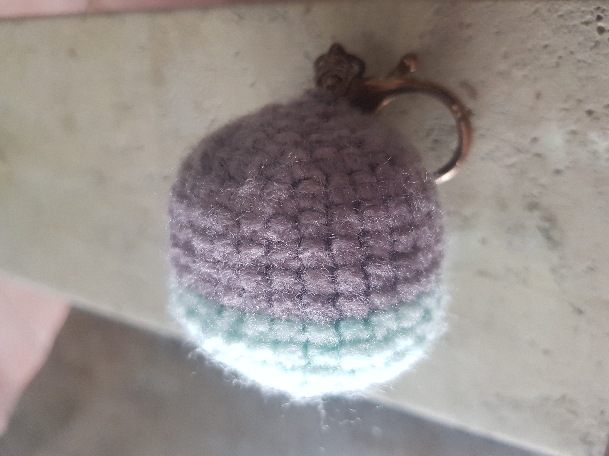
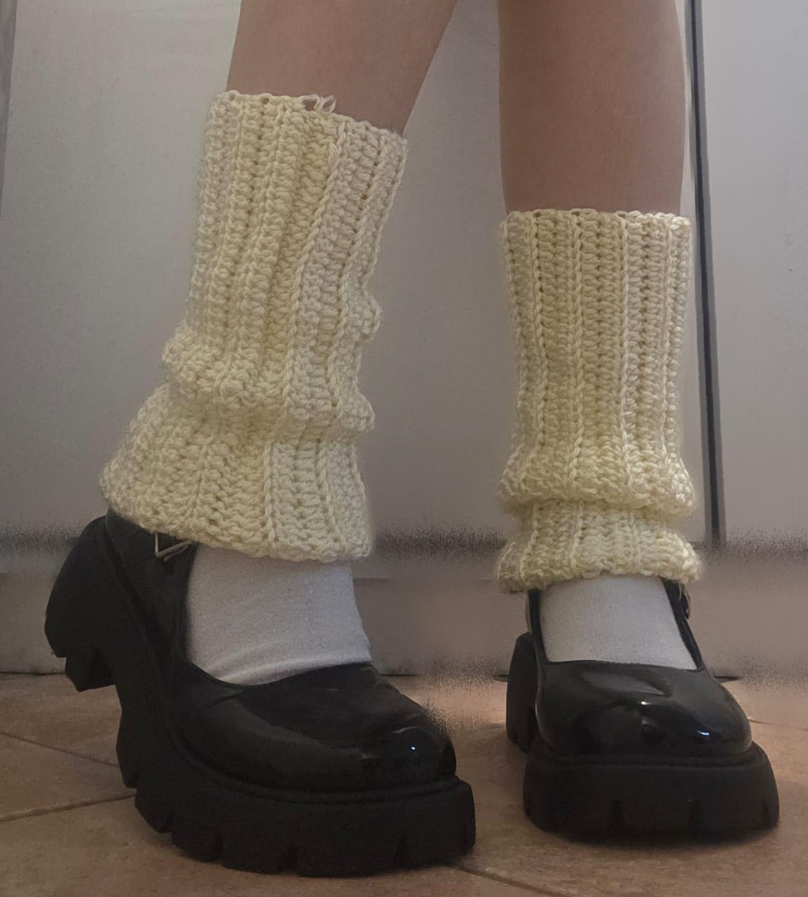
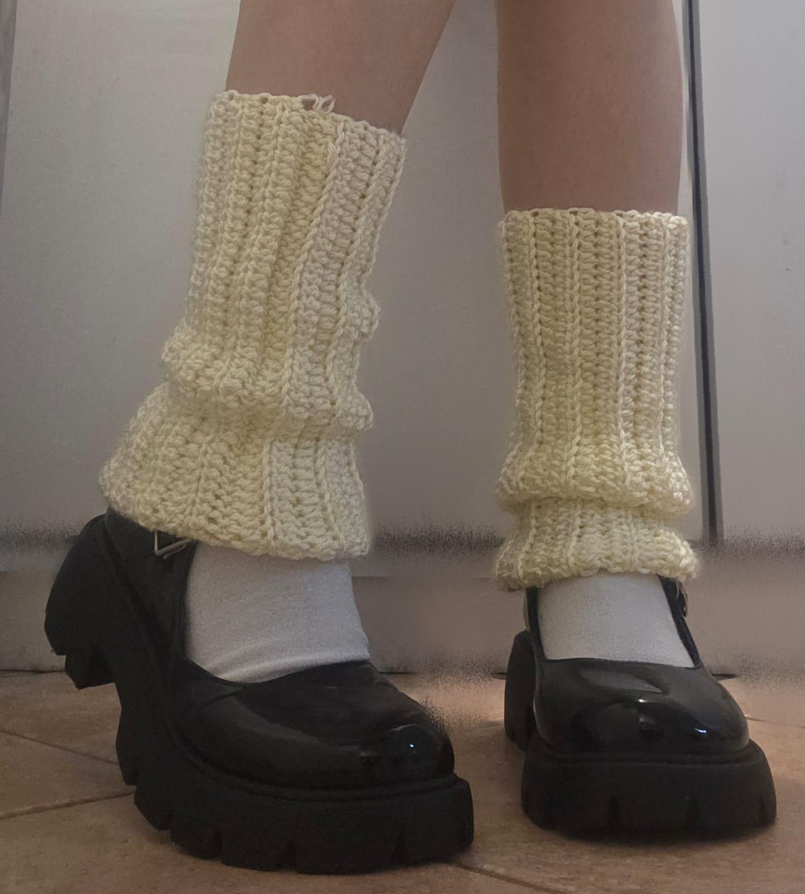
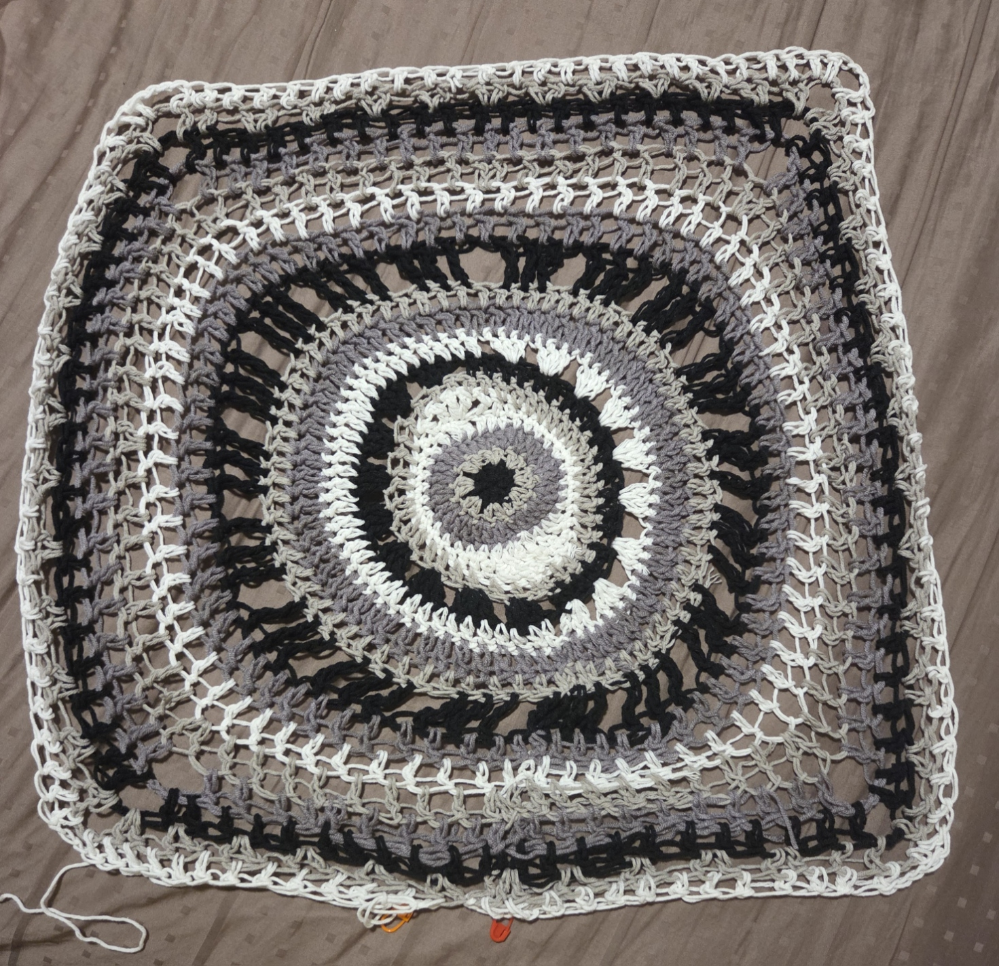
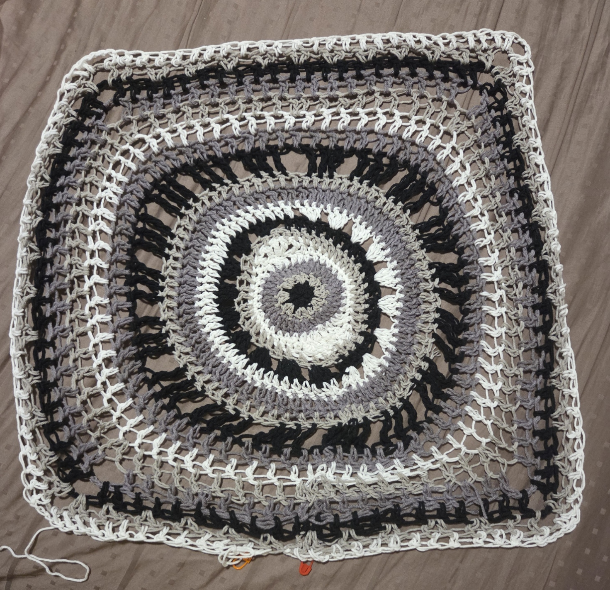

About Me
My Crochet Gallery
Welcome! Flip through to see my projects.
 

I began with basic shapes like ball keychains to understand the core structure of crochet. This foundation taught me patience and control, much like writing clean HTML and CSS when starting front-end development.
 

Next, I tried working with uniform rows and repeated stitch patterns. This mirrors how I learned layout consistency and style systems which are essential to a smooth front-end experience.
 

I began tackling projects that required shaping, color changes, and multiple parts. These taught me planning and problem-solving, similar to designing scalable UI components.
Crocheting has been a journey of exploration and persistence. It helped me hone an eye for detail, structure, and aesthetics, all of which I bring into front-end and UX/UI design today.
Giving Back to the Community
Welcome! Flip through to see my volunteering journey.
One of my earliest memories of volunteering. Standing at MRT stations with donation tins helped me build confidence when speaking to strangers and taught me how small actions can contribute to something bigger.
Whether distributing dengue prevention kits, ushering at year-end events, or decorating tiles for Chingay, these experiences opened my eyes to the value of community spirit, creativity, and adaptability.
Over two years, I assisted in planning and running festive events for children from low-income families. It taught me how to be thoughtful, responsive, and present, especially when others are counting on you.
Volunteering has shaped how I see people and systems. It’s shown me the power of empathy, thoughtful planning, and flexibility. These are values I try to carry into everything I do.